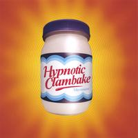

Forums galactiques > Assemblée Galactique : diplomatie officielle > attaque
Pages : 1
| natacha Respect diplomatique : 0  12/11 ETU 12:13 | Score : 0 Détails Aigle blanc et natacha s'avanca dans lassembler prire une chaise et s'assis autour d'une foule de commendant criant et hurlant a tout bas :
Aigle blanc s'eclaircit la vox et dit : - Chere commendant , sacher que mon but dans cette galaxie n'est pas de detruire tout les nouveau joueur comme beaucoup de monde pense mais est de detruire les commendant qui ont jouer une fois a apo eyt possede des planete . Les autrees commendant n'ont qu'a menvoyer un mp pour me demander de les rendre et je le fais mais si personne ne me les demande je ne peus pas savoir pour vous . Natacha pris la parole apres une que tout le monde est repris leur calme : - Mon frere et moi ne sommes pas des tirant et nous rendons les planete quand on nous les demande . Nous venons dailleurs de rendre les planete a THE WALL. Et nous nous engagon avant demain a rendre les planete a tout ceux qui nous enverron un mp , et nous nous engageon aussi a rendre les planete a aaron . salutation aigle blanc et natacha | ||
| THE WALL Respect diplomatique : 58  12/11 ETU 14:06 | Score : 0 Détails Je confirme : Aigle blanc est un commandant juste et honorable, mon expérience en est la preuve. Son honneur doit être réhabilité dans cette assemblée, j?espère en être l?acteur.
Mes salutations métalliques THE WALL | ||
| stradi Respect diplomatique : 211  12/11 ETU 15:08  | Score : 0 Détails Je remercis aigle blanc et natacha d'avoir eu l'honnetetee de venir s'exprimer sur l'assemblée et d'avoir choisi la voie diplomatique plutot que la force.
Je souhaite une bonne continuation a ces deux commandant(e)s. salutation galactique stradi |
Pages : 1
Forums galactiques > Assemblée Galactique : diplomatie officielle > attaque